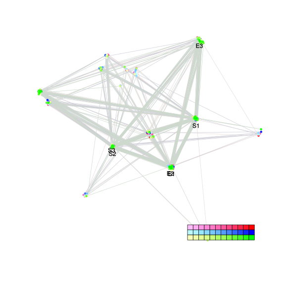
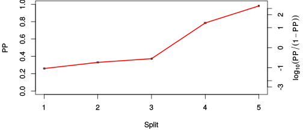
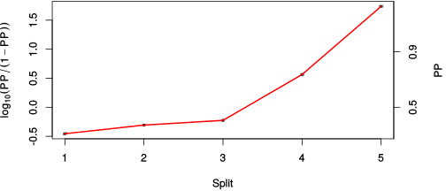

| chain # | burnin | subsample | Iterations (remaining) | command line | subdirectory | directory |
|---|---|---|---|---|---|---|
| 1 | 10000 | 1 | 90000 | bali-phy E6_AA_red3_BetaGamma.fas -s 28469 -n BetaGamma_c1 | BetaGamma_c1-1 | /DATA/work/ONCOGENEVOL/database/trees/Bali-Phy/red3/E6 |
| 2 | 10000 | 1 | 90000 | bali-phy E6_AA_red3_BetaGamma.fas -s 75943 -n BetaGamma_c2 | BetaGamma_c2-1 | /DATA/work/ONCOGENEVOL/database/trees/Bali-Phy/red3/E6 |
| 3 | 10000 | 1 | 90000 | bali-phy E6_AA_red3_BetaGamma.fas -s 84563 -n BetaGamma_c3 | BetaGamma_c3-1 | /DATA/work/ONCOGENEVOL/database/trees/Bali-Phy/red3/E6 |
| P(data|M) = -2184.884 +- 0.105 | Complete sample: 64 topologies | 95% Bayesian credible interval: 12 topologies |
Phylogeny Distribution

| Partition support: Summary |
| Partition support graph: SVG |
{kind=link}
| 50% consensus | Newick (+PP) | SVG | |||||
| 66% consensus | Newick (+PP) | SVG | |||||
| 80% consensus | Newick (+PP) | SVG | |||||
| 90% consensus | Newick (+PP) | SVG | |||||
| 95% consensus | Newick (+PP) | SVG | |||||
| 99% consensus | Newick (+PP) | SVG | |||||
| 100% consensus | Newick (+PP) | SVG | |||||
| MAP | Newick (+PP) | SVG | |||||
| greedy | Newick (+PP) | SVG |
{kind=link}
{kind=link}
{kind=link}
{kind=link}
{kind=link}
{kind=link}
{kind=link}
{kind=link}
Alignment Distribution
Partition 1
| Diff | Min. %identity | # Sites | Constant | Informative | ||||
|---|---|---|---|---|---|---|---|---|
| Initial | FASTA | HTML | Diff | 3.12% | 174 | 1 (0.575%) | 33 (19%) | |
| Best (WPD) | FASTA | HTML | AU | 21.3% | 194 | 17 (8.76%) | 60 (30.9%) |
Mixing
{kind=link}
{kind=link}
| burnin (scalar) | ESS (scalar) | ESS (partition) | ASDSF | MSDSF | PSRF-CI80% | PSRF-RCF |
|---|---|---|---|---|---|---|
| 787 | 6634 | 75480.155 | 0.001 | 0.003 | 1.001 | 1.007 |
Projection of RF distances for the first 3 chains3D | Variation of split PPs across chains |
Scalar variables
| Statistic | Median | 95% BCI | ACT | ESS | burnin | PSRF-CI80% | PSRF-RCF |
|---|---|---|---|---|---|---|---|
| prior | -126.9 | (-153.6, -106.5) | 32.22 | 8381 | 374 | 1 | 1.004 |
| prior_A1 | -104.2 | (-128.7, -86.82) | 5.074 | 53208 | 170 | 0.9997 | 1.002 |
| likelihood | -2173 | (-2187, -2160) | 9.035 | 29885 | 170 | 1 | 0.9997 |
| logp | -2301 | (-2325, -2281) | 40.7 | 6634 | 421 | 1 | 1.004 |
| Heat.beta | 1 | ||||||
| Scale1 | 3.963 | (1.731, 7.422) | 1 | 270003 | 94 | 0.9999 | 1.001 |
| S1.F.pi.A | 0.0502 | (0.0344, 0.06725) | 7.914 | 34116 | 787 | 0.9996 | 0.9969 |
| S1.F.pi.R | 0.06221 | (0.04461, 0.08169) | 7.787 | 34675 | 211 | 1 | 0.9968 |
| S1.F.pi.N | 0.03968 | (0.02664, 0.05436) | 7.543 | 35792 | 190 | 1 | 1 |
| S1.F.pi.D | 0.04993 | (0.03336, 0.06803) | 7.815 | 34547 | 136 | 1 | 0.998 |
| S1.F.pi.C | 0.08052 | (0.05703, 0.1066) | 8.123 | 33239 | 349 | 0.9999 | 0.9952 |
| S1.F.pi.Q | 0.03393 | (0.02249, 0.04698) | 7.81 | 34569 | 558 | 1.001 | 1.007 |
| S1.F.pi.E | 0.0551 | (0.03893, 0.07328) | 7.692 | 35101 | 397 | 1 | 0.9993 |
| S1.F.pi.G | 0.04977 | (0.03165, 0.07049) | 8.78 | 30753 | 510 | 0.9998 | 0.9977 |
| S1.F.pi.H | 0.0304 | (0.01805, 0.04439) | 8.119 | 33257 | 588 | 0.9997 | 1.004 |
| S1.F.pi.I | 0.05247 | (0.03701, 0.06935) | 8.1 | 33335 | 536 | 1 | 1.002 |
| S1.F.pi.L | 0.1304 | (0.1038, 0.1591) | 7.822 | 34516 | 732 | 0.9998 | 0.9913 |
| S1.F.pi.K | 0.04498 | (0.03031, 0.06101) | 8.111 | 33286 | 324 | 1 | 1.007 |
| S1.F.pi.M | 0.01141 | (0.004869, 0.0197) | 8.184 | 32993 | 507 | 0.9993 | 0.9948 |
| S1.F.pi.F | 0.07199 | (0.05197, 0.09385) | 7.682 | 35146 | 396 | 1 | 1.005 |
| S1.F.pi.P | 0.03245 | (0.01829, 0.04894) | 8.142 | 33159 | 372 | 0.9997 | 0.9965 |
| S1.F.pi.S | 0.04509 | (0.03036, 0.06109) | 8.227 | 32819 | 547 | 0.9997 | 1.004 |
| S1.F.pi.T | 0.03952 | (0.02557, 0.05489) | 7.686 | 35130 | 681 | 1 | 1.002 |
| S1.F.pi.W | 0.01388 | (0.005421, 0.02466) | 8.271 | 32642 | 546 | 1.001 | 0.999 |
| S1.F.pi.Y | 0.03816 | (0.02447, 0.05399) | 7.832 | 34474 | 319 | 1 | 0.9978 |
| S1.F.pi.V | 0.05835 | (0.04172, 0.07653) | 8.007 | 33722 | 557 | 1 | 1.006 |
| I1.RS07.meanIndelLengthMinus1 | 5.236 | (2.081, 10.61) | 11.27 | 23963 | 326 | 1 | 1.003 |
| I1.RS07.logLambda | -4.692 | (-5.345, -4.078) | 1.624 | 166295 | 98 | 1 | 1.001 |
| |A1| | 192 | (179, 211) | 35.55 | 7594 | 323 | 0.9857 | 0.9964 |
| #indels1 | 12 | (10, 15) | 5.342 | 50542 | 143 | 0.6667 | 1.002 |
| |indels1| | 67 | (51, 96) | 11.59 | 23301 | 151 | 0.9574 | 1 |
| #substs1 | 400 | (383, 413) | 31.53 | 8562 | 323 | 0.9524 | 0.9976 |
| Scale1*|T| | 5.124 | (4.506, 5.777) | 2.248 | 120133 | 84 | 0.9999 | 1.003 |
| |A| | 192 | (179, 211) | 35.55 | 7594 | 323 | 0.9857 | 0.9964 |
| #indels | 12 | (10, 15) | 5.342 | 50542 | 143 | 0.6667 | 1.002 |
| |indels| | 67 | (51, 96) | 11.59 | 23301 | 151 | 0.9574 | 1 |
| #substs | 400 | (383, 413) | 31.53 | 8562 | 323 | 0.9524 | 0.9976 |
| |T| | 1.294 | (0.5456, 2.314) | 1.003 | 269174 | 130 | 0.9997 | 1.002 |